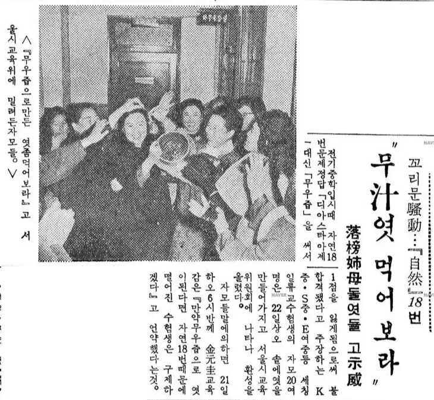
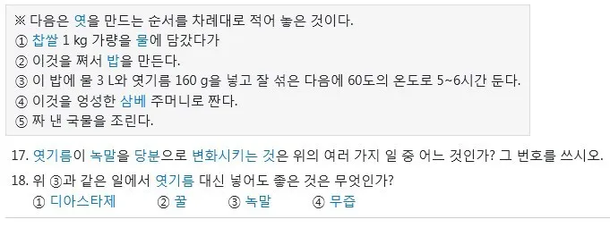

전설의
무즙 파동
사건.
1964년 12월 7일에 있었던, 1965학년도 서울특별시
중학교 입학시험의 문제 출제 오류 때문에 생긴 사건임.
당시 오류가 있었던 문제는 자연 과목 18번으로,

"엿을 만들 때 엿기름 대신 넣어도 좋은것은 무엇인가?"였음.
이 당시의 최초 정답은 보기 1번인
디아스타제(현재 표기법으로는 디아스테이스)였는데,
아마도 출제자는 성분을 의도하고 출제했던 것 같지만
문제가 것으로 표기되었기 때문에 4번 보기인
무즙으로 적었다가 오답처리 됨.
문제는 이 한 문제 때문에
낙방한 학생들이 속출함.
그런데 이후 사건 전개가 웃기게 돌아감.
1. 출제위가 해당 문제를 백지화하고 모든 학생들에게 점수를 부여하겠다고 발표.
2. 몇몇 명문 중학교에 지원한 학생들의 부모들이이에 반발해 들고 일어남.
3.출제위는 발표를 번복하고 초기 정답인 디아스타제만 정답으로 인정 한다고 발표.
4. 이 과정에서 교육감이 무즙으로 엿을 만들 수 있다면 해당 학생들을구제해 보겠다는 발언을 함.
5.무즙으로 써서 오답처리된 학생들의 부모님들이존나 빡돌아서 진짜 무즙을 넣어 만든
엿을 들고 와 엿이나 먹으라며 극딜
.
6. 결국 재판까지 이어지고 문제 오류가 인정되어 다음 해인 1965년에 해당 학생들이 전부 구제됨.
7. 이 와중에 진짜 점수 안되는데 묻어가려던 입시부정까지 적발.
엿 먹어라~